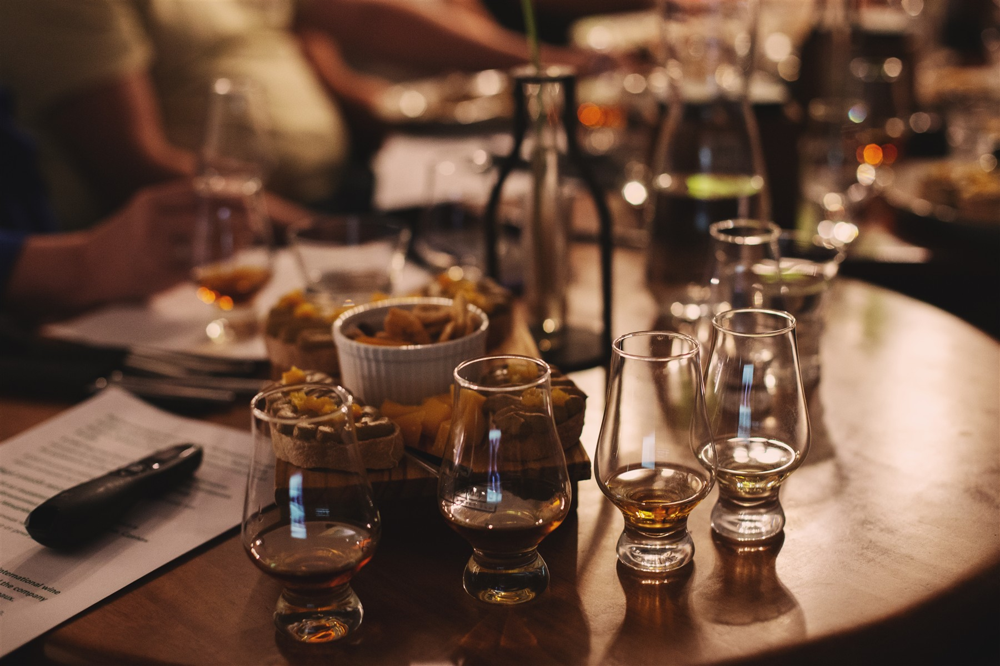

Beyond the Glass
Beyond
the Glass.
Whisky as a way to explore history, people and ideas. Author-led tasting themes connect what is in the glass with a wider story.
The theme, selection and format are discussed individually.

Whisky Without Borders
Explore different whisky cultures: Japan, India, Taiwan, Europe and Israel.
Find your way in
One passion.
Your own way to explore.
Learn, taste, build a collection or bring people together. Start with what interests you.
Before we meet